SECCIÓN 9S
EXTREMO TRASERO DE LA CARROCERÍA
Precaución: Desconecte el cable negativo de la batería antes de desmontar o instalar cualquier unidad eléctrica o cuando exista la posibilidad de que una herramienta o equipo pueda entrar en contacto con bornes eléctricos expuestos. La desconexión de dicho cable ayudará a evitar lesiones personales y daños al vehículo. La llave de contacto debe estar en posición LOCK a menos que se indique lo contrario.
ESPECIFICACIONES
Especificaciones de apriete
| Aplicación | N•m | Árbol de transmisión izquierdo | Articulación |
| Tornillos de la compuerta de llenado de combustible | 4 | - | 35 |
| Tornillos de la bisagra de la puerta trasera levadiza | 25 | 18 | - |
| Tornillo del cierre de la puerta trasera levadiza | 10 | - | 88 |
| Tornillos del trinquete de la puerta trasera levadiza | 10 | - | 88 |
| Tuercas del tirador exterior de la puerta trasera levadiza | 3 | - | 27 |
| Tuercas del aplique de la puerta trasera levadiza | 6 | - | 53 |
| Tuercas del aplique superior de la puerta trasera levadiza | 6 | - | 53 |
DIAGRAMAS DE ESQUEMAS Y DIRECCIONES
Sistema del cristal de la puerta trasera levadiza
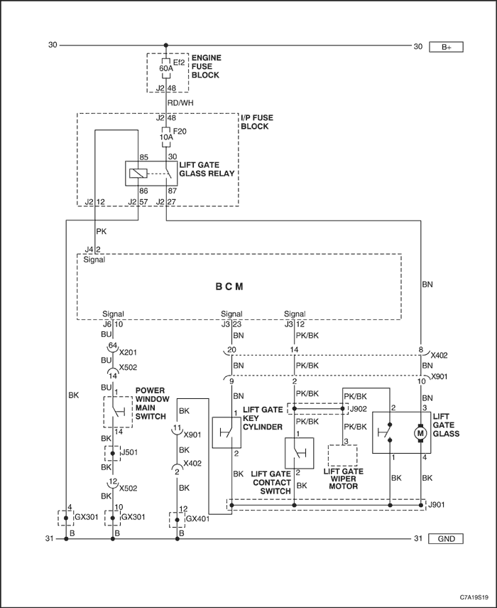


MANTENIMIENTO Y REPARACIÓN
servicio con vehículo en marcha
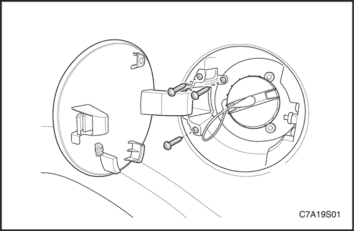
Compuerta de llenado de combustible
Procedimiento de desmontaje
- Quite los tornillos y desmonte la compuerta de llenado de combustible.
procedimiento de montaje
Aviso: Metales distintos en contacto directo pueden corroerse rápidamente. Asegúrese de utilizar los elementos de sujeción correctos para evitar una corrosión prematura.
- Monte la compuerta de llenado de combustible con sus tornillos.
Apretar
Apriete los tornillos de la compuerta de llenado de combustible hasta 4 N•m (35 lb-pulg.).
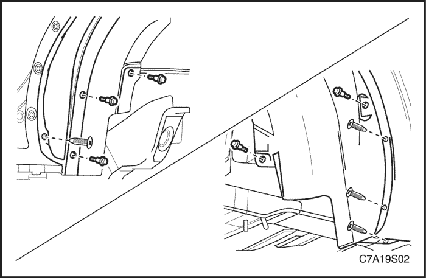
Forro del paso de rueda trasero
Procedimiento de desmontaje
- Desmonte las retenciones a presión del forro del paso de rueda trasero.
- Desmonte del vehículo el forro del paso de rueda trasero.
procedimiento de montaje
- Coloque el forro del paso de rueda trasero en el vehículo.
- Monte las retenciones a presión.
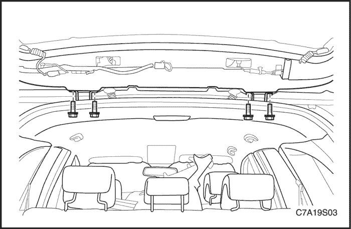
Puerta trasera levadiza
Procedimiento de desmontaje
- Desmonte la moldura embellecedora superior de la luneta de la puerta trasera levadiza. Consulte el apartado "Moldura embellecedora superior de la luneta de la puerta trasera levadiza" de esta sección.
- Abra la puerta trasera levadiza y sujétela.
- Desenchufe los conectores del cableado de la puerta trasera levadiza.
- Desconecte el manguito del lavaparabrisas trasero.
- Saque el pasacables del cableado de la puerta trasera levadiza, los conectores y el manguito del lavaparabrisas trasero del cabecero trasero.
- Retire los montantes de la puerta trasera levadiza. Consulte el apartado "Montante de puerta trasera levadiza" de esta sección.
- Marque el sitio de las bisagras de la puerta trasera levadiza con la carrocería con un lápiz de cera.
- Quite los tornillos de fijación de las bisagras de la puerta trasera levadiza.
- Retire la puerta trasera levadiza del vehículo con ayuda de otra persona.
procedimiento de montaje
- Con la ayuda de alguien, coloque las bisagras de la puerta trasera levadiza en los sitios marcados en la carrocería.
Aviso: Deben utilizarse tuercas de fijación de las bisagras a la carrocería nuevas para garantizar un cierre adecuado.
- Coloque los tornillos de fijación de las bisagras de la puerta trasera levadiza.
Apretar
Apriete los tornillos de fijación de las bisagras de la puerta trasera levadiza hasta 25 N•m (18 lb-pulg.).
- Verifique la alineación de la puerta trasera levadiza; ajuste según sea necesario.
- Instale los montantes de la puerta trasera levadiza. Consulte el apartado "Montante de puerta trasera levadiza" de esta sección.
- Coloque el pasacables del cableado de la puerta trasera levadiza, los conectores y el manguito en el cabecero trasero.
- Enchufe los conectores del cableado de la puerta trasera levadiza.
- Conecte el manguito del lavaparabrisas trasero.
- Monte la moldura embellecedora superior de la luneta de la puerta trasera levadiza. Consulte el apartado "Moldura embellecedora superior de la luneta de la puerta trasera levadiza" de esta sección.
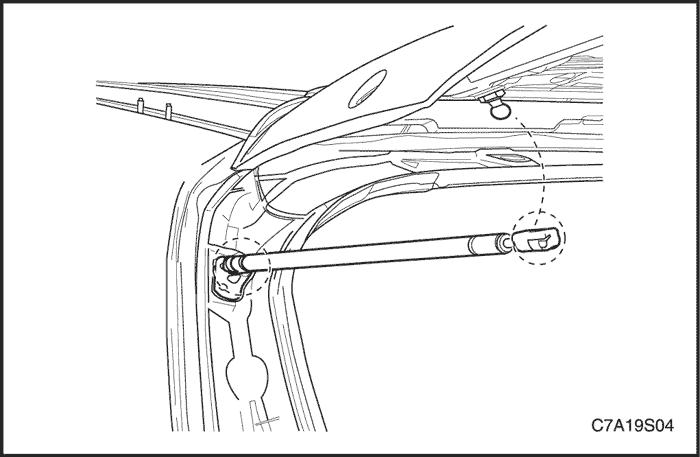
Montante de la puerta trasera levadiza
Procedimiento de desmontaje
- Levante y sujete las puerta trasera levadiza en posición abierta.
- Levante y desmonte parcialmente los clips elásticos del montante con la ayuda de una herramienta de punta plana pequeña.
- Desmonte el extremo superior del montante de la rótula.
- Desmonte el extremo inferior del montante de la rótula.
- Desinstale el montante de la puerta trasera levadiza.
procedimiento de montaje
- Coloque el montante en la puerta trasera levadiza.
- Monte el extremo superior del montante en la rótula. Presione hasta que quede bien encajado.
- Monte el extremo inferior del montante en la rótula. Presione hasta que quede bien encajado.
- Desmonte el soporte de la puerta trasera levadiza.
- Cierre la puerta trasera levadiza.
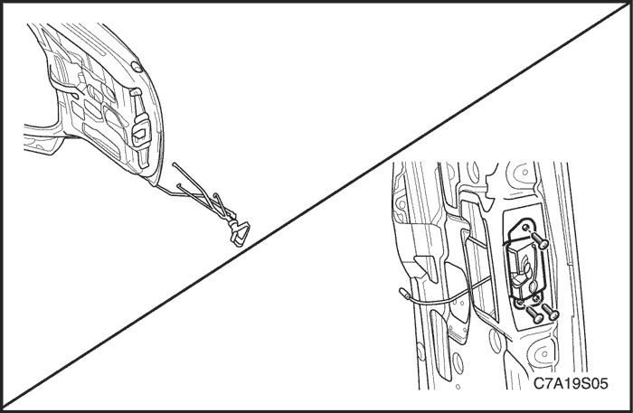
Cierre de la puerta trasera levadiza
Procedimiento de desmontaje
- Desmonte el guarnecido inferior de la puerta trasera levadiza. Consulte el apartado "Guarnecido inferior de la puerta trasera levadiza" de esta sección.
- Desconecte la varilla de la cerradura.
- Desenchufe el conector eléctrico.
- Quite los tornillos y desmonte el cierre de la puerta trasera levadiza.
procedimiento de montaje
- Enchufe el conector eléctrico.
- Conecte la varilla de la cerradura.
Aviso: Metales distintos en contacto directo pueden corroerse rápidamente. Asegúrese de utilizar los elementos de sujeción correctos para evitar una corrosión prematura.
- Asegure el cierre de la puerta trasera levadiza con sus tornillos.
Apretar
Apriete el tornillo del cierre de la puerta trasera levadiza hasta 10 N•m (88 lb-pulg.).
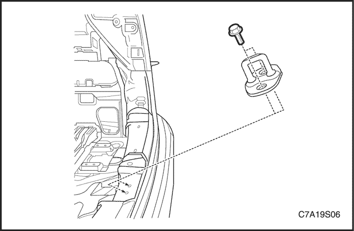
Trinquete de la puerta trasera levadiza
Procedimiento de desmontaje
- Abra el cristal de la puerta trasera levadiza.
- Desmonte la extensión trasera del panel del piso.
- Quite los tornillos que sujetan el trinquete.
- Extraiga el trinquete.
procedimiento de montaje
Aviso: Metales distintos en contacto directo pueden corroerse rápidamente. Asegúrese de utilizar los elementos de sujeción correctos para evitar una corrosión prematura.
- Monte el trinquete con sus tornillos.
Apretar
Apriete los tornillos del trinquete de la puerta trasera levadiza hasta 10 N•m (88 lb-pulg.).
- Monte la extensión trasera del panel del piso.
- Cierre la puerta trasera levadiza.
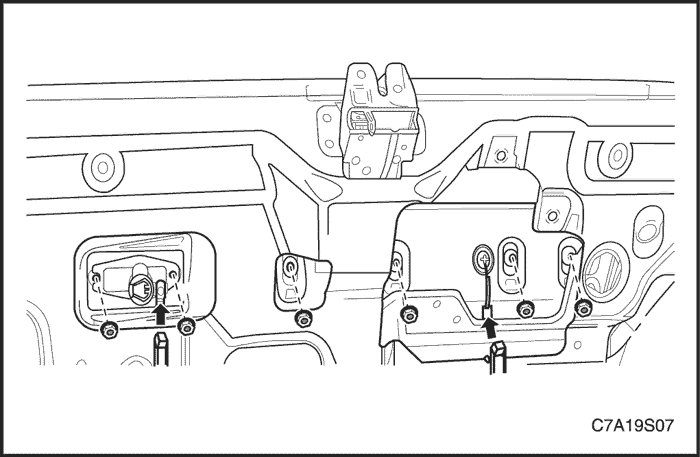
Tirador exterior de la puerta trasera levadiza
Procedimiento de desmontaje
- Desconecte el cable negativo de la batería.
- Desmonte el guarnecido inferior de la puerta trasera levadiza. Consulte el apartado "Guarnecido inferior de la puerta trasera levadiza" de esta sección.
- Desenchufe el conector eléctrico.
- Quite las tuercas y desmonte el tirador exterior de la puerta trasera levadiza.
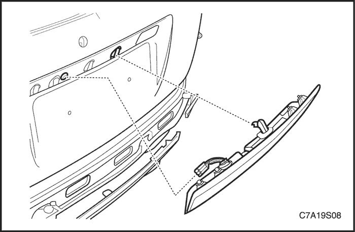
procedimiento de montaje
Aviso: Metales distintos en contacto directo pueden corroerse rápidamente. Asegúrese de utilizar los elementos de sujeción correctos para evitar una corrosión prematura.
- Monte el tirador exterior de la puerta trasera levadiza con sus tuercas.
Apretar
Apriete la tuerca del tirador exterior de la puerta trasera levadiza hasta 3 N•m (27 lb-pulg.).
- Enchufe el conector eléctrico.
- Desmonte el guarnecido inferior de la puerta trasera levadiza. Consulte el apartado "Guarnecido inferior de la puerta trasera levadiza" de esta sección.
- Conecte el cable negativo de la batería.
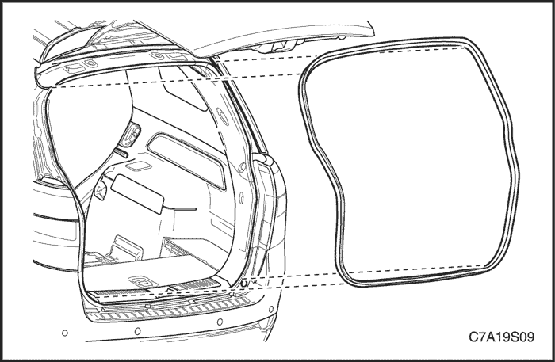
Burlete de la puerta trasera levadiza
Procedimiento de desmontaje
- Abra el cristal de la puerta trasera levadiza.
- Desmonte el burlete alrededor del canalón.
procedimiento de montaje
- Monte el burlete en la brida del canalón.
- Revise el burlete. Asegúrese de que el remache está perfectamente acoplado en la brida.
- Monte un burlete nuevo en la brida del canalón.
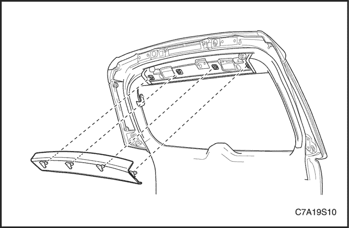
Moldura embellecedora superior de la luneta de la puerta trasera levadiza
Procedimiento de desmontaje
- Abra el cristal de la puerta trasera levadiza.
- Desmonte la moldura embellecedora superior de la luneta de la puerta trasera levadiza.
procedimiento de montaje
- Monte la moldura embellecedora superior de la luneta de la puerta trasera levadiza.
- Cierre la puerta trasera levadiza.
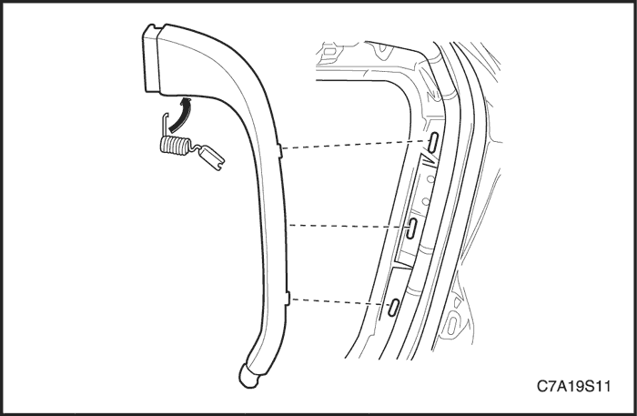
Moldura embellecedora lateral de la luneta de la puerta trasera levadiza
(Se muestra la moldura embellecedora izquierda, la moldura de la derecha es similar)
Procedimiento de desmontaje
- Desmonte la moldura embellecedora lateral de la luneta de la puerta trasera levadiza.
procedimiento de montaje
- Monte la moldura embellecedora lateral de la luneta de la puerta trasera levadiza.
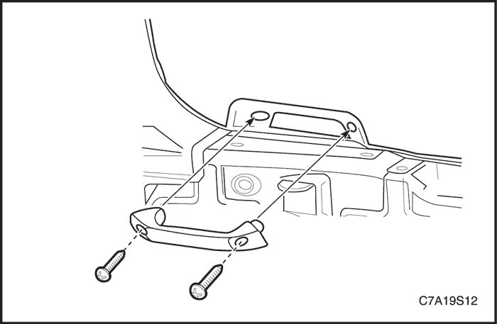
Guarnecido inferior de la puerta trasera levadiza
Procedimiento de desmontaje
- Quite los tornillos y desmonte el tirador interior de la puerta trasera levadiza.
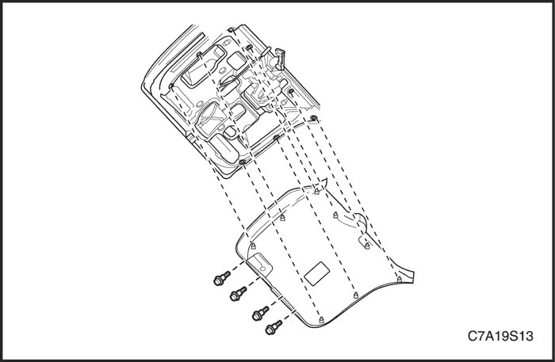
- Desmonte las retenciones del guarnecido inferior de la puerta trasera levadiza.
- Desmonte del vehículo el guarnecido inferior de la puerta trasera levadiza.
procedimiento de montaje
- Monte el guarnecido inferior de la puerta trasera levadiza con sus retenciones.
- Monte el tirador interior de la puerta trasera levadiza con sus tornillos.
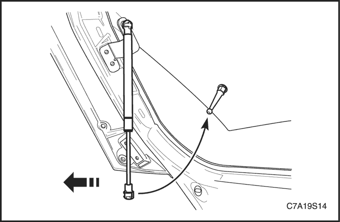
Montante de la luneta de la puerta trasera levadiza
Procedimiento de desmontaje
- Levante y sujete la luneta de la puerta trasera levadiza en posición abierta.
- Levante y desmonte parcialmente los clips elásticos del montante con la ayuda de una herramienta de punta plana pequeña.
- Desmonte el extremo superior del montante de la rótula.
- Desmonte el extremo inferior del montante de la rótula.
- Desinstale el montante de la luneta de la puerta trasera levadiza.
procedimiento de montaje
Aviso: Metales distintos en contacto directo pueden corroerse rápidamente. Asegúrese de utilizar los elementos de sujeción correctos para evitar una corrosión prematura.
- Coloque el montante en la luneta de la puerta trasera levadiza.
- Monte el extremo superior del montante en la rótula. Presione hasta que quede bien encajado.
- Monte el extremo inferior del montante en la rótula. Presione hasta que quede bien encajado.
- Monte el soporte en la luneta de la puerta trasera levadiza.
- Cierre la luneta de la puerta trasera levadiza.
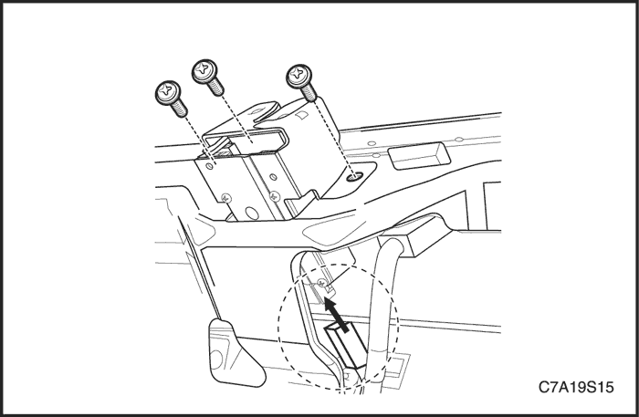
Cierre de la luneta de la puerta trasera levadiza
Procedimiento de desmontaje
- Desmonte el guarnecido inferior de la puerta trasera levadiza. Consulte el apartado "Guarnecido inferior de la puerta trasera levadiza" de esta sección.
- Quite los tornillos y desmonte el cierre de la luneta de la puerta trasera levadiza.
- Desenchufe el conector eléctrico.
procedimiento de montaje
- Enchufe el conector eléctrico.
- Monte el cierre de la luneta de la puerta trasera levadiza con sus tornillos.
- Monte el guarnecido inferior de la puerta trasera levadiza. Consulte el apartado "Guarnecido inferior de la puerta trasera levadiza" de esta sección.
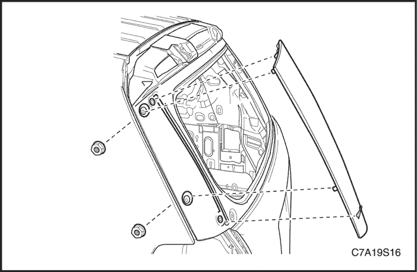
Aplique de puerta trasera levadiza
Procedimiento de desmontaje
- Quite las tuercas del aplique.
- Desmonte del vehículo el aplique de la puerta trasera levadiza.
procedimiento de montaje
- Monte el aplique de la puerta trasera levadiza con sus tuercas.
Apretar
Apriete las tuercas del aplique de la puerta trasera levadiza hasta 6 N•m (53 lb-pulg.).
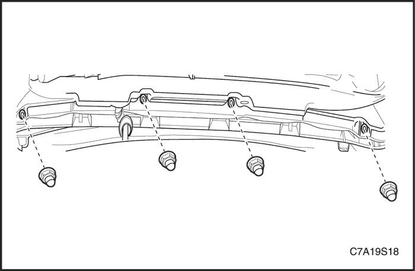
Aplique superior de la puerta trasera levadiza
Procedimiento de desmontaje
- Abra el cristal de la puerta trasera levadiza.
- Quite las tuercas del aplique superior de la puerta trasera levadiza.
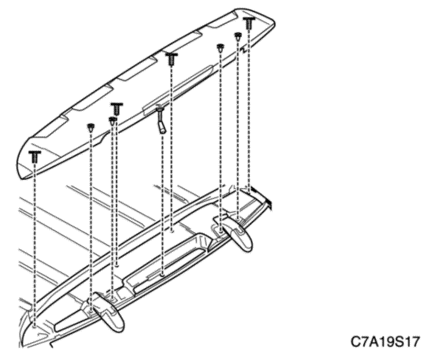
- Cierre la puerta trasera levadiza.
- Desmonte del vehículo el aplique superior de la puerta trasera levadiza.
procedimiento de montaje
- Monte el aplique superior de la puerta trasera levadiza con sus tuercas.
Apretar
Apriete las tuercas del aplique superior de la puerta trasera levadiza hasta 6 N•m (53 lb-pulg.).
DESCRIPCIÓN GENERAL Y FUNCIONAMIENTO DEL SISTEMA
Compuerta de llenado de combustible
La compuerta de llenado de combustible va montada en el hueco de la boca de llenado del depósito de combustible, en el lado derecho del vehículo. Esta compuerta se abre mediante un tirador de accionamiento a distancia situado en el piso, delante del asiento del conductor.
Puerta trasera levadiza
La puerta trasera levadiza puede abrirse accionando el interruptor que hay en la puerta del conductor. El actuador de la puerta trasera levadiza recibe tensión de la batería por medio del módulo de control de la carrocería (BCM). El BCM enviará impulsos al actuador cuando se reciba la orden de apertura a través del llavero o del interruptor de la puerta del conductor.